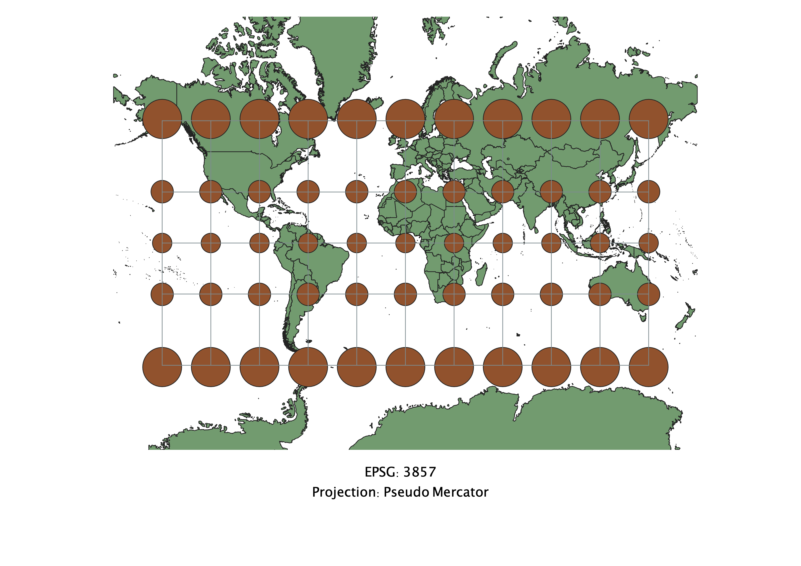
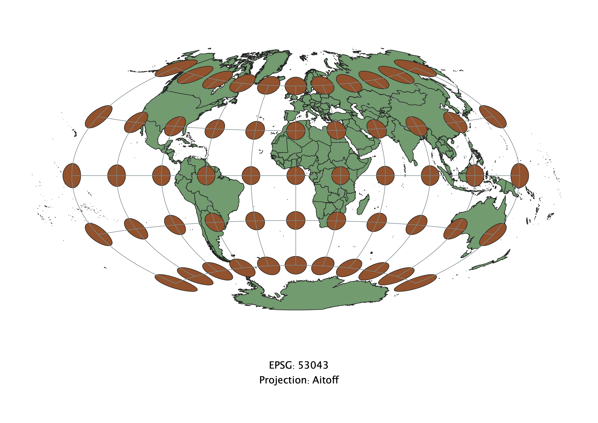
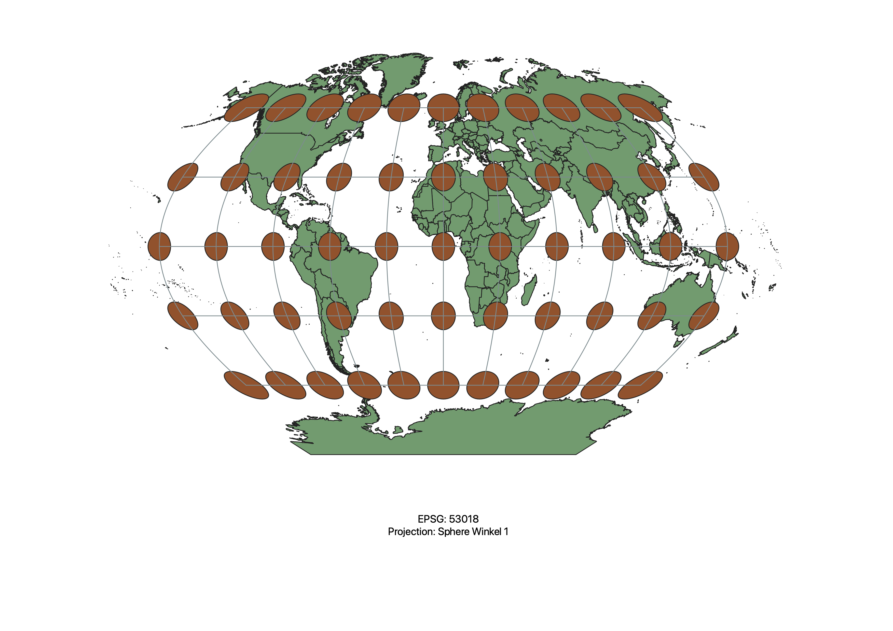
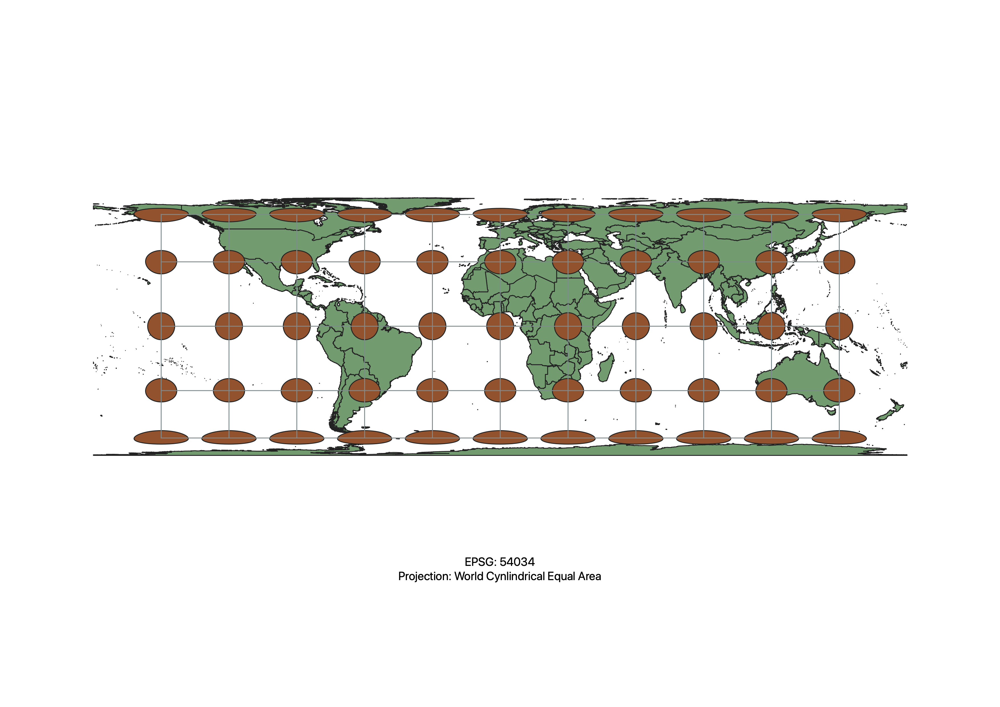
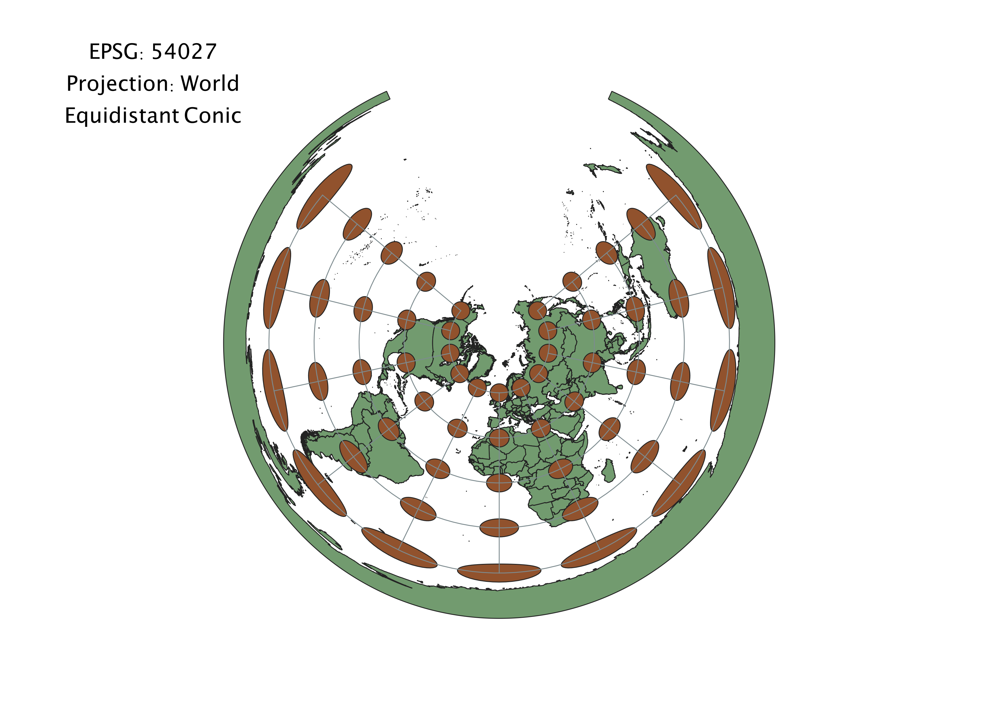
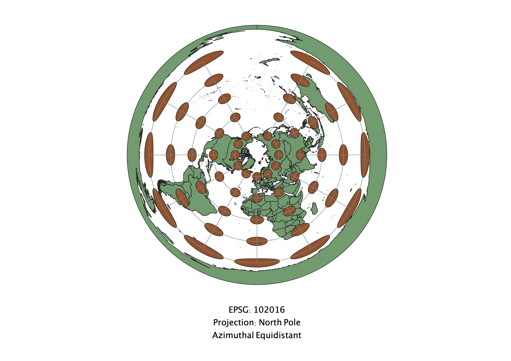
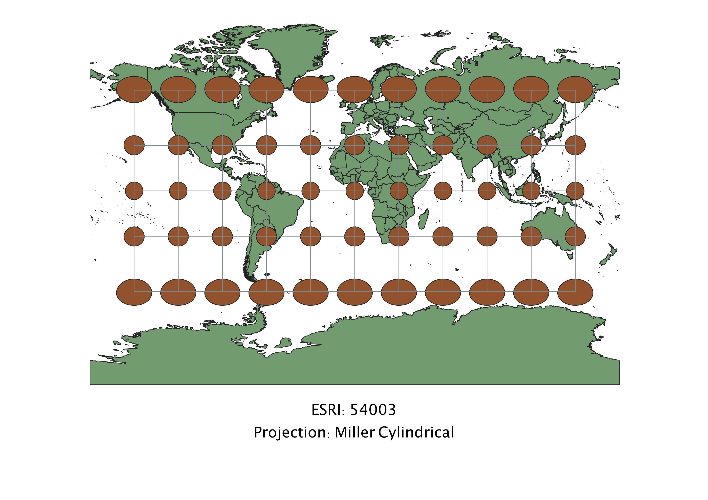
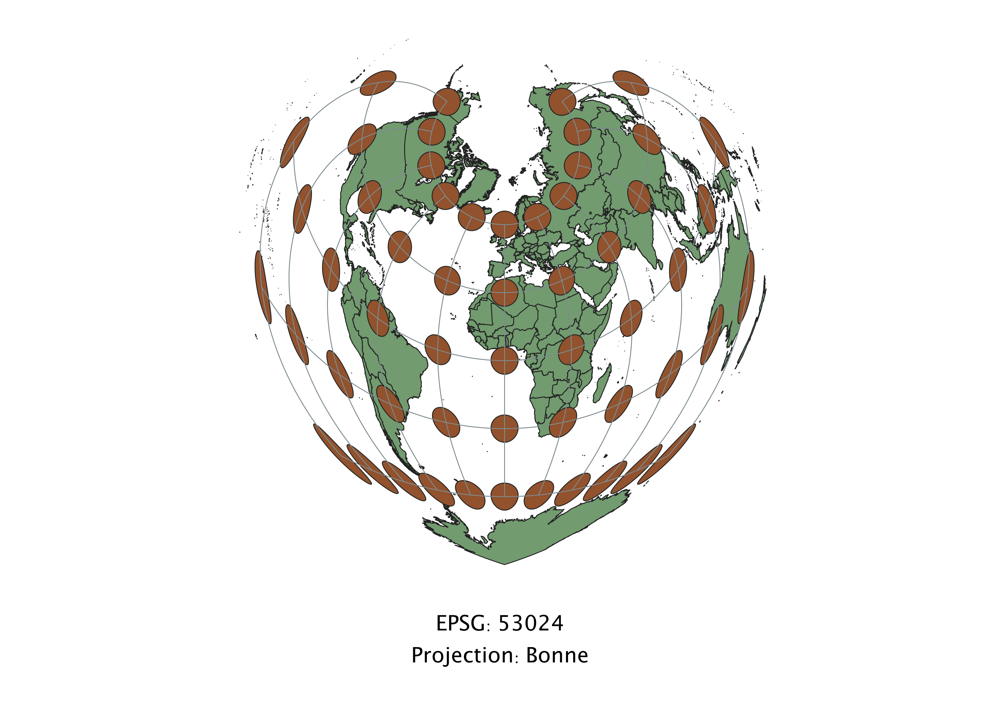

To alter the projection of a map in QGIS, I changed the properties to reflect different EPSG values.
Observations: North and South poles are distorted, larger than Equator
Observations: Oval shaped, stretched longitudes to compensate for latitudes
Observations: Better with less distortion, looks like it minimizes distance distortion
Observations: This projection is horizontally stretched out and distorted.
Observations: This map looks extremelt distorted around the Antartica area. Ex. cone placed above Earth
Observations: Plane placed above Earth...
Observations: Poles distorted, doesn't horribly distort area, size, or distance
Observations: Heart shaped!
